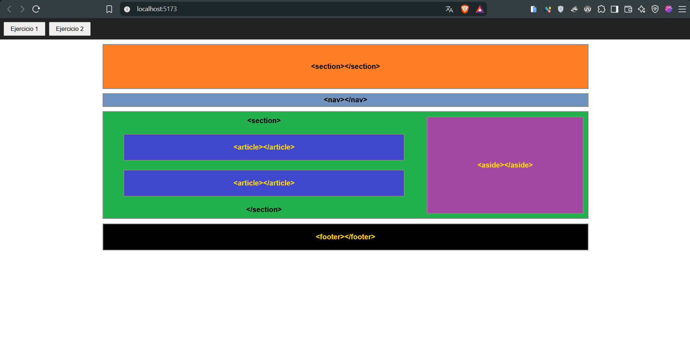
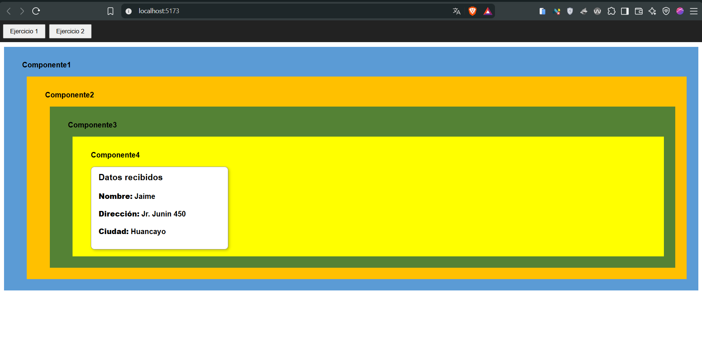
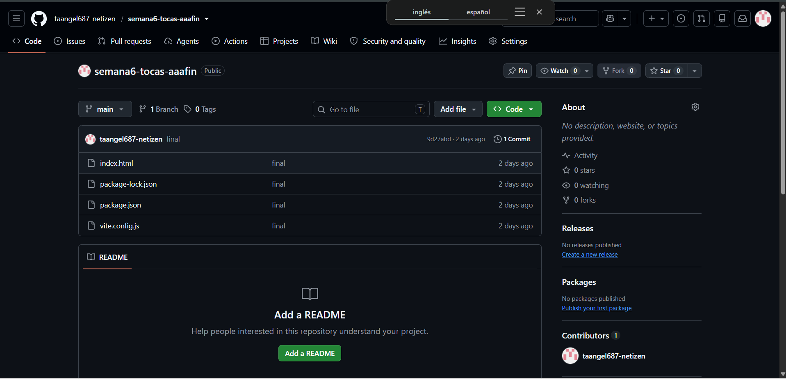
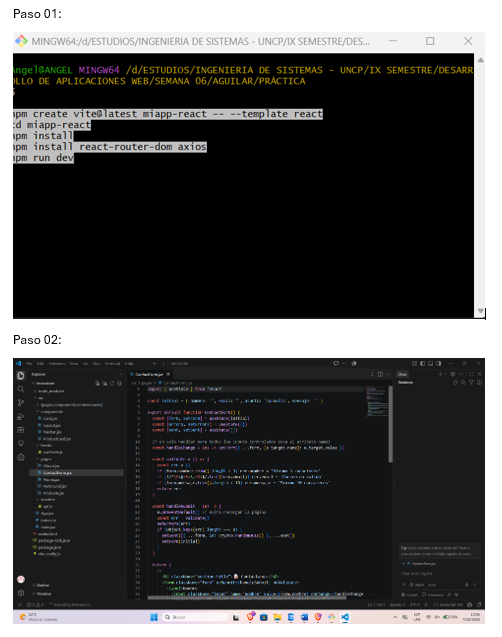
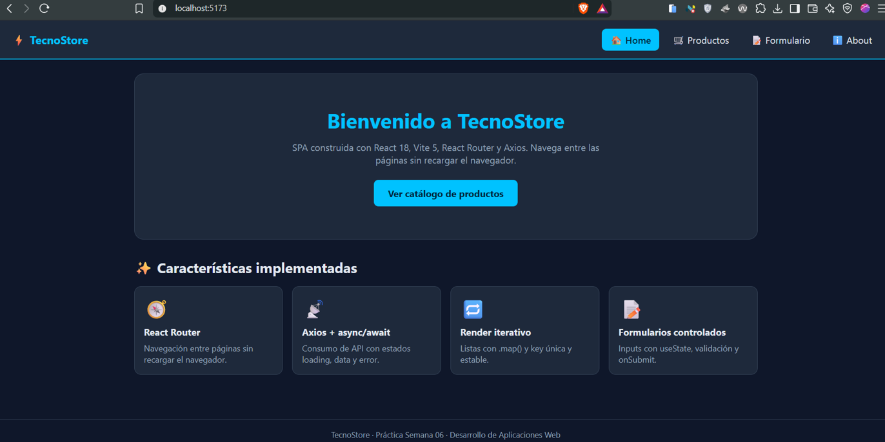
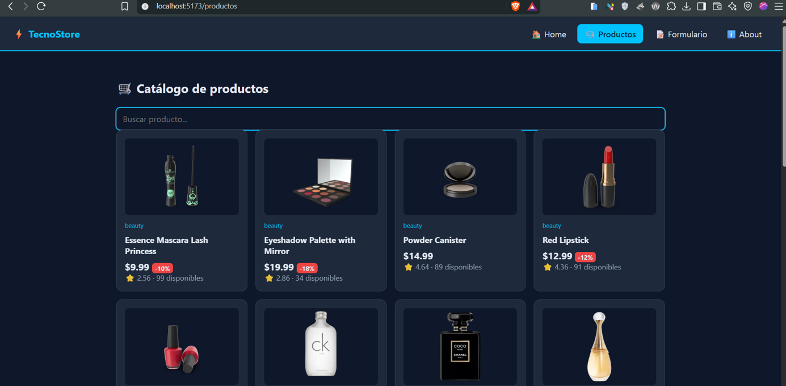
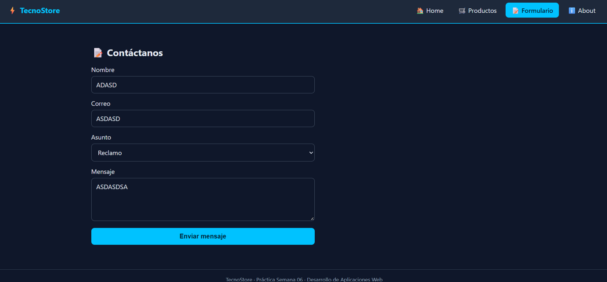
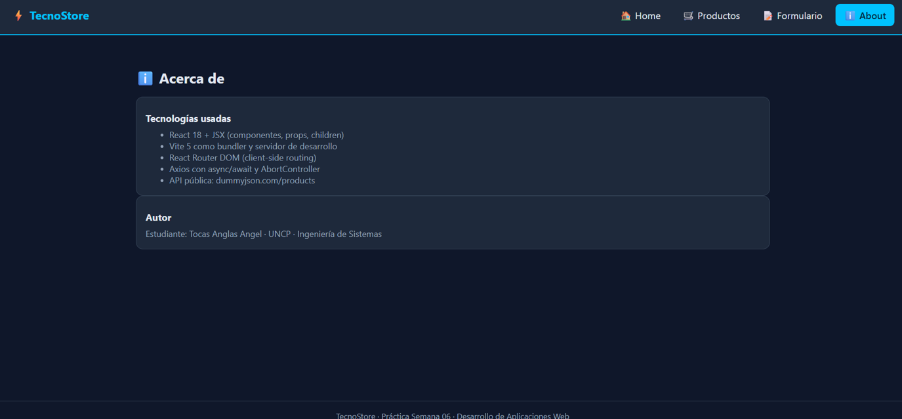

Los eventos permiten que la interfaz responda a las acciones del usuario: clics, escritura en un campo, envío de un formulario. En React se asignan como atributos del elemento con nombres en camelCase.
function Boton() {
const saludar = () => alert("Hola");
return <button
onClick={saludar}>Saludar</button>;
}
Mostrar u ocultar elementos según una condición, con
&& o el operador ternario ? :.
Generar una lista de elementos a partir de un arreglo con
map(). Cada elemento lleva una
key única.
{logueado ? <Panel /> : <Login />}
<ul>
{usuarios.map((u) => (
<li
key={u.id}>{u.name}</li>
))}
</ul>
Se capturan los datos de los campos con eventos como
onChange y onSubmit.
Permite navegar entre vistas de una aplicación de una sola página sin recargar el navegador.
Una API entrega datos desde un servidor. Como la respuesta no es inmediata, se trabaja con operaciones asíncronas.
Objetos que representan un resultado futuro. Se encadenan con
.then() y .catch().
Sintaxis que permite escribir código asíncrono con apariencia secuencial.
Librería para hacer peticiones HTTP de forma más sencilla que
fetch.
import axios from "axios";
async function cargarUsuarios() {
try {
const res = await
axios.get("https://jsonplaceholder.typicode.com/users");
setUsuarios(res.data);
} catch (error) {
console.error(error);
}
}


La práctica fue el Laboratorio 06A: eventos y renderizado condicional e iterativo con datos de una API.
Obtención de datos con Axios usando async/await.
Lista de los datos recibidos con map() y contenido
mostrado según condiciones.
Interacción del usuario con la aplicación mediante eventos.






Aprendí a manejar eventos en React, a mostrar contenido según
condiciones y a recorrer listas con map(). También a
consumir datos de una API con promesas, async/await y Axios.
Con la teoría del docente y desarrollando el laboratorio: pedí datos a una API, los mostré en pantalla y probé cada evento hasta que la aplicación respondió como esperaba.
Para conectar el frontend con un servidor y mostrar datos reales. Es justo lo que necesito en mis proyectos fullstack, donde la interfaz consume la API del backend.
Entender el comportamiento asíncrono: los datos no llegan al instante, y hay que manejar el caso de espera y de error.
Usando console.log para ver la respuesta de la API,
separando la carga de datos del renderizado y probando con
try/catch.
En mis proyectos con backend propio y como base para los hooks de
la semana 7, como useState y useEffect,
que son los que manejan el estado y la carga de datos.